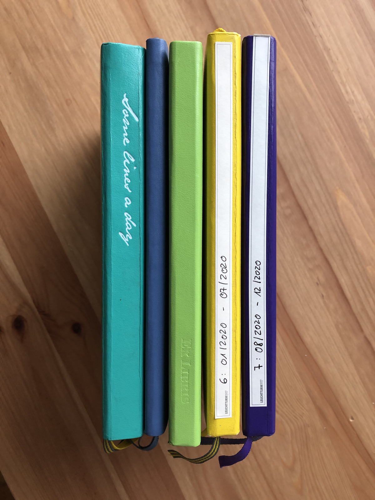
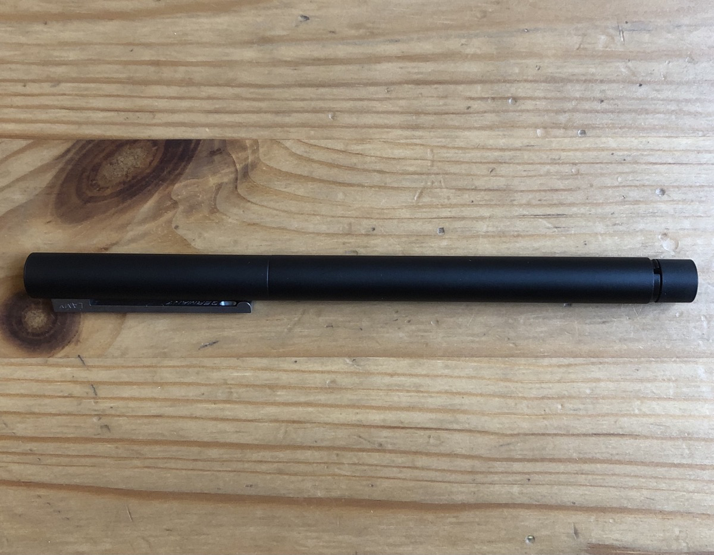

Journaling through a Pandemic

I started 2020 with a very different expectation of the year to come. And I think it’s safe to say that I’m not alone in that one. But fast-forward 3 months and I found myself in the middle of a lockdown and a pandemic. Everyone is at home all the time, it’s working from home all the time, no coffee shops, no meeting friends, and that for the foreseeable future. The days are fairly unstructured and pretty chaotic as we try to make the best of this situation. In which I found myself really embracing journaling into various paper notebooks and it has made a tremendous difference for my mental health.
Some lines a day
Towards the end of 2019 I had bought a “Some lines a day” journal from Leuchtturm1917. And while at the beginning of the year, I wasn’t too sure what to put it in there, and lots of entries were just of the “had coffee today and got some stuff done” variety. I now really appreciate having this low-pressure prompt to get my thoughts out of my brain every morning.
The way the journal is designed is that it has 365 pages, one page per day. The pages are then divided into 5 parts so that the book can be used for 5 years. Once you’re through with the first year, you can see what you wrote in the year(s) before when getting to subsequent entries. It’s basically an analog version of the “On this day” feature you can find in every photo and journaling app these days.
The really nice part about this is that there isn’t really a ton of space for each day. So, it’s very low pressure. If you want, you can write a single sentence, and it feels like you did all there was to do. Or you can write fairly small and get a couple of good thoughts on paper before the space fills up. This means that for me, I can sit down in the morning and put whatever is on my mind onto paper, without a goal or a requirement. A literal brain dump.
Long Form Journal
A month into the first lockdown, I wanted to have a place to continue these thoughts from the “Some lines a day” brain dumps. So I ordered a simple soft cover, lined, A5 notebook from Leuchtturm1917 again. And once it arrived, I just poured my thoughts and anxieties into it. Every morning when I could see that some lines wouldn’t be enough, I continued whatever thoughts I had in this new journal. It felt a bit awkward at first because I wasn’t sure how to deal with which things go in there. It was different from only writing some lines because filtering felt like a built-in thing with so little space each day. But in the long form journal there was no limitation. It took me a while to get used to the journal and be ok with writing whatever crossed my mind with no judgement or self censoring. But it was (and still is) incredibly helpful to calm myself down in the morning and try to make sense of all the thoughts in my brain.
Again, I try not to force any requirements or expectations on me with this journal, either. If I thought there was more to write but I am done after 2 sentences, that’s fine and I’ll close the journal for the day. Or pick it up again in the afternoon to continue some thoughts or add new ones. I allow myself to have days (or weeks) where I don’t have the patience and calm to write in there. Or write multiple pages a day. The purpose of it is to make sure I don’t keep things rotating in my brain that make me distracted and anxious, but dump them onto paper. Even if I ran out of “some lines” that day.
Bullet journals
Which then brings the third notebook into focus, which is my Bullet Journal. I wrote about this before, and it has seen a couple of different implementations since writing the original post.
In the Bullet Journal, which is a dotted A5 Leuchtturm1917 notebook for me, I describe “the runway” of my responsibilities. Meaning that I plan out what the months, weeks, and days (often with explicit time blocks) should ideally be. Which of course never actually ends up being what reality looks like.
Make the plan. Execute the plan. Expect the plan to go off the rails. Throw away the plan. - Leonard Snart
But that’s ok. It’s the map, not the territory. And sometimes even just a compass. The important thing for me is that it’s a place where I put structure into the day and don’t just let it happen. I’ve learned about myself over the years that while I sometimes feel like it would be nice to just not have any plans or to-dos for a day, these unstructured days quickly turn into dissatisfaction for me. And I feel like I’ve not done anything. This is why I try to be intentional about my days. At least during the week. Weekends are still mostly unstructured in the sense that I don’t plan out the whole day but maybe only one or two things.
A very major thing the Bullet Journal is instrumental in for me is what I call “Inbox anxiety”. Depending on how much and what kind of things I have going on, I find myself in periods of dreading opening E-Mail (especially in the morning) because of the additional and new responsibilities I will find in there. And to some extent this also goes for physical mail. So the way I tackle that is that I open the Bullet Journal and the mail client on my phone. And for everything I see in there that needs follow-up - or any other action from my side - I write a to-do item into the journal. Including some potential context, or related to-dos, and so on. And I’ve found that this helps me feel grounded and not overwhelmed in times when there is more incoming responsibilities through my inboxes than I’d like to.
As the kind of complement to that, I also try to log even seemingly mundane things I do throughout the day. Especially on days that don’t go as planned, or are super stressful and I end up not feeling super great about them, it’s helpful to take a break and realize where all the time went that day. And what kind of things I actually did get done. And even if it still means I didn’t get much done, I have a record of the day and it doesn’t feel that lost. Especially throughout this pandemic, where every day has a tendency to feel the same, it’s useful to have something that shows me that this isn’t quite true. And all the days are indeed different, if only in subtle ways.
What I don’t really put into the Bullet Journal anymore are backlogs (or “someday” lists in GTD parlance). I realized that with 2 notebooks a year for bullet journaling, there are a bunch of things that often get migrated over and over again because I want to get to them eventually, but there is no time pressure. And it was tedious to rewrite them all the time. It just made me feel like the collections I had those items in weren’t useful and actually demotivating to me. So I moved those into digital tools to keep the Bullet journal the place for front-of-mind things.
Reading journal
Towards the end of 2019 I also bought an “Ex Libris” reading journal from Leuchtturm1917. This is the least used one of my regular journals. But while I don’t use it consistently, it’s been an absolutely fun addition. It mostly came about through me realizing that I don’t super enjoy Goodreads for more than tracking when I’m reading and finishing a book. I don’t like the review interface, and the app is generally pretty slow. And it never really intrigues me to go back and browse through the books I read and what I thought about them the way a paper journal does.
In closing
As difficult and challenging as 2020 was, and the ongoing pandemic continues to be, this process of having notebooks for many different ways to get things out of my head is immensely helpful to me. And as a continuation of leaning more on analog tools that I started in 2018 it keeps me from being completely petrified and procrastinating in the morning on many days. It also provides a way to really think about what thoughts and anxieties are rotating in my brain and have a conversation about it, even if I’m basically just talking to myself. And despite it being slightly inconvenient to carry around 3 or so notebooks sometimes, the benefits I get from having them around vastly outweighs that inconvenience for me. I even got myself a nice new pen to enjoy the process of sitting down and writing even more.
